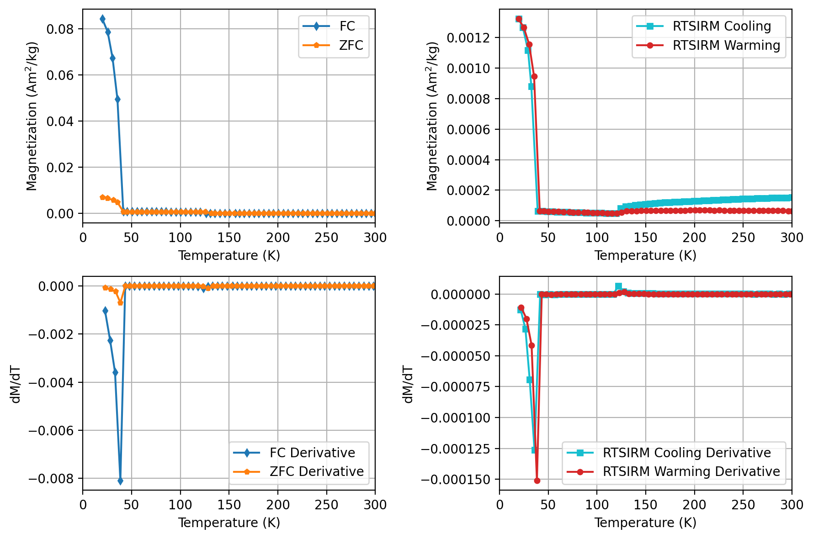
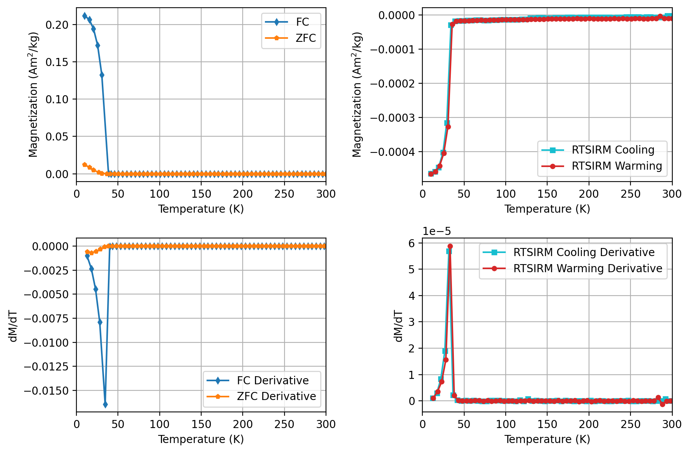
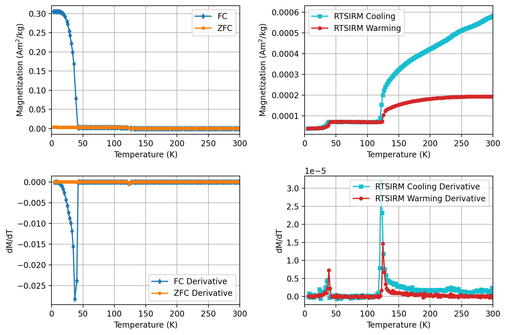

Siderite data within the Rock Magnetic Bestiary#
import pmagpy.rockmag as rmag
import pmagpy.contribution_builder as cb
import pmagpy.ipmag as ipmag
import matplotlib.pyplot as plt
%config InlineBackend.figure_format = 'retina'
Import data#
# set the MagIC ID for the data set here
magic_id = '20349'
# provide the share key for the data set
share_key = '11bafee8-bfcb-4147-88d8-6fcf60614317'
# set where you want the downloaded data to go
dir_path = 'example_data/siderite'
result, magic_file = ipmag.download_magic_from_id(magic_id, directory=dir_path, share_key=share_key)
ipmag.unpack_magic(magic_file, dir_path, print_progress=False)
siderite_contribution = cb.Contribution(dir_path)
measurements = siderite_contribution.tables['measurements'].df
Download successful. File saved to: example_data/siderite/magic_contribution_20349.txt
1 records written to file /Users/penokean/0000_GitHub/RockmagPy-notebooks/example_data/siderite/contribution.txt
1 records written to file /Users/penokean/0000_GitHub/RockmagPy-notebooks/example_data/siderite/locations.txt
1 records written to file /Users/penokean/0000_GitHub/RockmagPy-notebooks/example_data/siderite/sites.txt
2 records written to file /Users/penokean/0000_GitHub/RockmagPy-notebooks/example_data/siderite/samples.txt
8 records written to file /Users/penokean/0000_GitHub/RockmagPy-notebooks/example_data/siderite/specimens.txt
1243 records written to file /Users/penokean/0000_GitHub/RockmagPy-notebooks/example_data/siderite/measurements.txt
-I- Using online data model
-I- Getting method codes from earthref.org
-I- Importing controlled vocabularies from https://earthref.org
Summarize experiments#
rmag.make_experiment_df(measurements)
| specimen | method_codes | experiment | |
|---|---|---|---|
| 0 | siderite_Dalizi-YP-01 | LP-CW-SIRM:LP-MC | siderite_Dalizi-YP-01-LP-CW-SIRM:LP-MC-DC-9812 |
| 1 | siderite_Dalizi-YP-01 | LP-CW-SIRM:LP-MW | siderite_Dalizi-YP-01-LP-CW-SIRM:LP-MW-DC-9812 |
| 2 | siderite_Dalizi-YP-01 | LP-FC | siderite_Dalizi-YP-01-LP-FC-DC-9812 |
| 3 | siderite_Dalizi-YP-01 | LP-X:LP-X-T:LP-X-F | IRM-OldBlue-LP-X:LP-X-T:LP-X-F-9811 |
| 4 | siderite_Dalizi-YP-01 | LP-ZFC | siderite_Dalizi-YP-01-LP-ZFC-DC-9812 |
| 5 | siderite_Roman-01 | LP-CW-SIRM:LP-MC | siderite_Roman-01-LP-CW-SIRM:LP-MC-DC-9810 |
| 6 | siderite_Roman-01 | LP-CW-SIRM:LP-MW | siderite_Roman-01-LP-CW-SIRM:LP-MW-DC-9810 |
| 7 | siderite_Roman-01 | LP-FC | siderite_Roman-01-LP-FC-DC-9810 |
| 8 | siderite_Roman-01 | LP-MST | siderite_Roman-01-LP-MST-DC-9810 |
| 9 | siderite_Roman-01 | LP-ZFC | siderite_Roman-01-LP-ZFC-DC-9810 |
| 10 | siderite_unk-01 | LP-CW-SIRM:LP-MC | siderite_unk-01-LP-CW-SIRM:LP-MC-DC-9821 |
| 11 | siderite_unk-01 | LP-CW-SIRM:LP-MW | siderite_unk-01-LP-CW-SIRM:LP-MW-DC-9821 |
| 12 | siderite_unk-01 | LP-FC | siderite_unk-01-LP-FC-DC-9821 |
| 13 | siderite_unk-01 | LP-ZFC | siderite_unk-01-LP-ZFC-DC-9821 |
specimen siderite_Dalizi-YP-01#
specimen_name = 'siderite_Dalizi-YP-01'
fc_data, zfc_data, rtsirm_cool_data, rtsirm_warm_data = rmag.extract_mpms_data_dc(measurements, specimen_name)
rmag.plot_mpms_dc(fc_data, zfc_data, rtsirm_cool_data, rtsirm_warm_data,plot_derivative=True)
FC_ZFC_ratio = fc_data['magn_mass'][0]/zfc_data['magn_mass'][0]
print(f"FC/ZFC ratio for {specimen_name}: {round(FC_ZFC_ratio,1)}")

{kind=link}
FC/ZFC ratio for siderite_Dalizi-YP-01: 12.1
specimen siderite_Roman-01#
specimen_name = 'siderite_Roman-01'
fc_data, zfc_data, rtsirm_cool_data, rtsirm_warm_data = rmag.extract_mpms_data_dc(measurements, specimen_name)
rmag.plot_mpms_dc(fc_data, zfc_data, rtsirm_cool_data, rtsirm_warm_data,plot_derivative=True)
FC_ZFC_ratio = fc_data['magn_mass'][0]/zfc_data['magn_mass'][0]
print(f"FC/ZFC ratio for {specimen_name}: {round(FC_ZFC_ratio,1)}")

{kind=link}
FC/ZFC ratio for siderite_Roman-01: 17.4
export figure#
specimen_name = 'siderite_Roman-01'
fc_data, zfc_data, rtsirm_cool_data, rtsirm_warm_data = rmag.extract_mpms_data_dc(measurements, specimen_name)
fig = rmag.plot_mpms_dc(fc_data, zfc_data, rtsirm_cool_data, rtsirm_warm_data,
return_figure=True,show_plot=False)
fig.savefig('book/images/siderite_Roman-01_MPMS.png', dpi=300, bbox_inches='tight')
{kind=link}
specimen siderite_unk-01#
specimen_name = 'siderite_unk-01'
fc_data, zfc_data, rtsirm_cool_data, rtsirm_warm_data = rmag.extract_mpms_data_dc(measurements, specimen_name)
rmag.plot_mpms_dc(fc_data, zfc_data, rtsirm_cool_data, rtsirm_warm_data,plot_derivative=True)
FC_ZFC_ratio = fc_data['magn_mass'][0]/zfc_data['magn_mass'][0]
print(f"FC/ZFC ratio for {specimen_name}: {round(FC_ZFC_ratio,1)}")

{kind=link}
FC/ZFC ratio for siderite_unk-01: 94.5